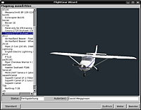

StartOberfläche
Dieser Artikel wurde für die folgenden Ubuntu-Versionen getestet:
Ubuntu 16.04 Xenial Xerus
Zum Verständnis dieses Artikels sind folgende Seiten hilfreich:
Wer FlightGear schon mit dem Betriebssytemen Windows oder MacOS benutzt hat, wird wissen, dass dort ein Programmstarter zum Paketumfang gehört. Dies ist in Ubuntu auch gegeben, weil der Spielspaß dadurch deutlich erhöht wird. Die hier zusammengetragenen Informationen stammen im Wesentlichen aus dem Forum und dem Wiki von FlightGear.
FlightGear Launch Control - FGrun¶
|  |
| Launch Control FGRun |
FlightGear Launch Control  bietet eine umfangreiche grafische Oberfläche, um - ohne die Kommandozeile zu benutzen - das gewünschte Flugzeug, den gewünschten Startflughafen, die Wetterbedingungen und weitere Details einzustellen, um das Spiel damit zu starten. Es ist ab Ubuntu 12.04 in den offiziellen Ubuntu-Paketquellen enthalten.
bietet eine umfangreiche grafische Oberfläche, um - ohne die Kommandozeile zu benutzen - das gewünschte Flugzeug, den gewünschten Startflughafen, die Wetterbedingungen und weitere Details einzustellen, um das Spiel damit zu starten. Es ist ab Ubuntu 12.04 in den offiziellen Ubuntu-Paketquellen enthalten.
Es lässt sich über das folgenden Paket installieren [1]
fgrun (universe)
 mit apturl
mit apturl
Paketliste zum Kopieren:
sudo apt-get install fgrun
sudo aptitude install fgrun
Bedienung¶
Die Einstellungen bzgl. Flugzeug, Startflughafen, etc. sind weitgehend selbsterklärend, daher wird hier nicht näher darauf eingegangen. Ausführliche und bebilderte Information ist im FlightGear-Wiki, Unterseite FGrun  einzusehen.
einzusehen.
Nach erfolgreicher Installation, kann das Programm-Zusatztool über den Befehl fgrun [4] im Terminal oder über den Menüeintrag "Anwendungen -> Spiele -> FlightGear FGrun"[3] gestartet werden.
FGo!¶
FGo! ist geeignet für FlightGear ab 2.4 - Der Ansatz verfolgt eine Mischung aus Kommandozeilenparametern und einer erleichterten Vorauswahl von Flugmodellen und Flughäfen.
| Hauptmenü |
| Hilfe-Funktion Beschreibung des Programms + Funktionshinweise |
Installation¶
Das Programm kann aus den Standardpaketquellen installiert [1] werden
fgo (universe)
mit apturl
Paketliste zum Kopieren:
sudo apt-get install fgo
sudo aptitude install fgo
Bedienung¶
Die Einstellungsmöglichkeiten sind selbsterklärend und die Oberfläche ist im Wiki von FlightGear dokumentiert. Die Bedienoberfläche hat ist mehrsprachig einstellbar. Über den Menüeintrag "Anwendungen -> Spiele -> FGo!" kann die Oberfläche gestartet [3] werden.
| Einstellungen-FlightGear |
| Einstellungen-TerraGear |
| Einstellungen-Verschiedenes |
Die Auswahl im Menüreiter "Werkzeuge", betrifft nur die Dateneingabe für METAR, die Importfunktion für die lokalen Wetterverhältnisse und ist deshalb hier nicht abgebildet. Mehr zu dieser Funktion kann man im FlightGear-Handbuch erfahren.

Infobox FGrun¶
| FGrun | |
| Genre: | Flugsimulator - GUI |
| Sprache: | |
| Veröffentlichung: | 22.10.2002 |
| Dateigrösse | 368,1 KiB |
| Systemvoraussetzungen: | FlightGear muss installiert sein |
| Multiplayerfähig: | x - Linux only |
| Läuft mit: | Multisystem |
| Lizenz | GNU - GPL |
Infobox FGo!¶
| FGo! | |
| Genre: | Flugsimulator - GUI |
| Sprache: | u.v.m |
| Veröffentlichung: | 24.9.2009 |
| Dateigrösse | 62 KiB |
| Systemvoraussetzungen: | FlightGear muss installiert sein |
| Multiplayerfähig: | x - Linux only |
| Läuft mit: | Unixoide |
| Lizenz | GNU - GPL |
- Erstellt mit Inyoka
-
 2004 – 2017 ubuntuusers.de • Einige Rechte vorbehalten
2004 – 2017 ubuntuusers.de • Einige Rechte vorbehalten
Lizenz • Kontakt • Datenschutz • Impressum • Serverstatus -
Serverhousing gespendet von